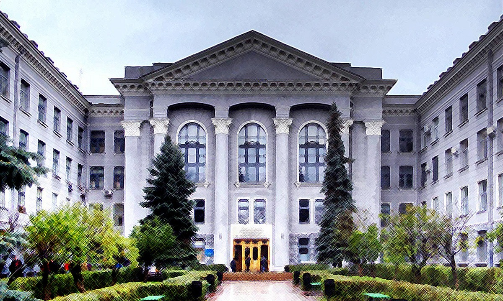

Ласкаво просимо на наш веб-сайт, присвячений навчальному відділу закладу вищої освіти Харківському національному університет радіоелектроники
Тут ви знайдете захоплюючі новини, цікаві події та цінну інформацію про все, що відбувається в середовищі відділу закладу вищої освіти Харківському національному університет радіоелектроники.
Що можна знайти на сайті:
1. Інформацію про відділ закладу в кладці "Про відділ"
2. Цікаві зоображеня університету та відділу можна переглянути в кладці "Галерея зображень"
3. Всі актуальні новини університета та відділу знаходяться в кладці "Новини"
4. Місцезнаходження університету та його контакти можна переглянути в кладці "Контакти"